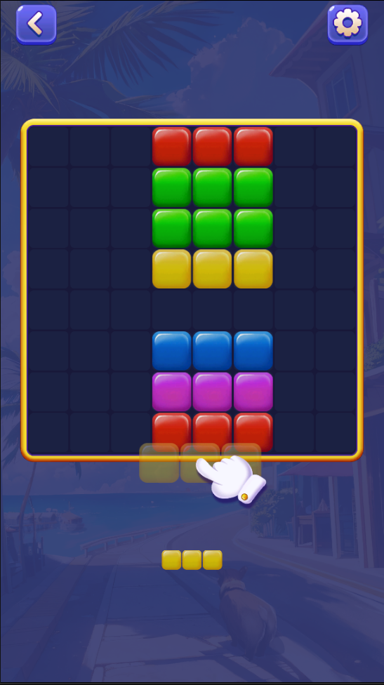
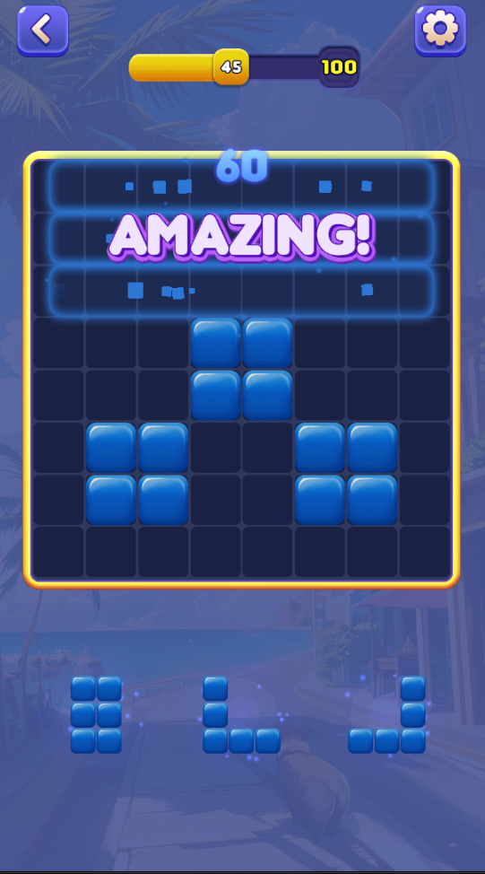
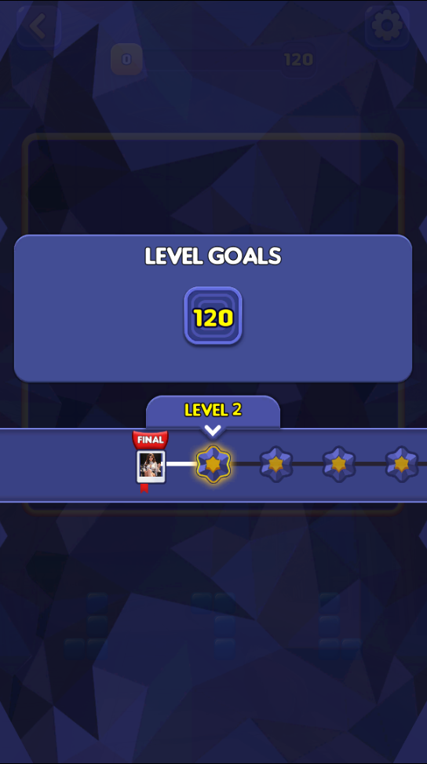
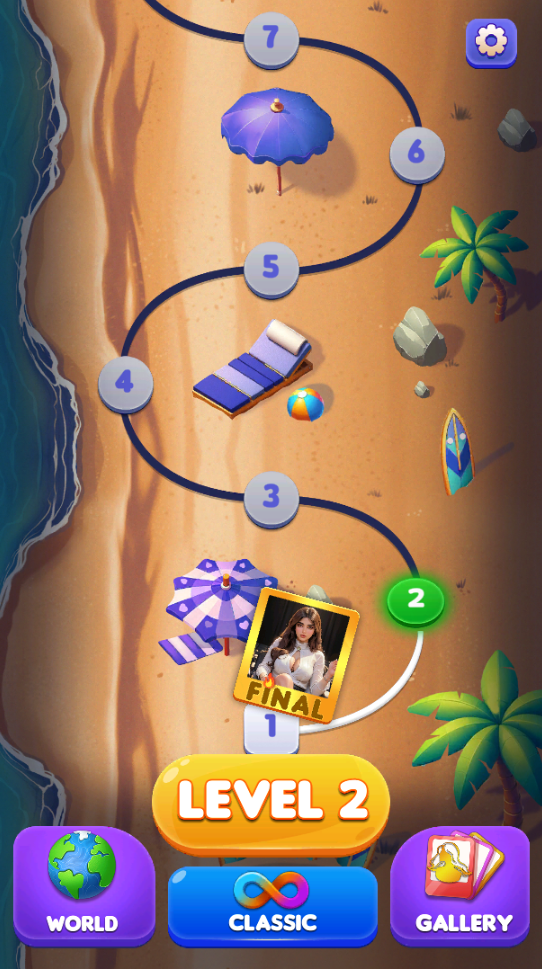
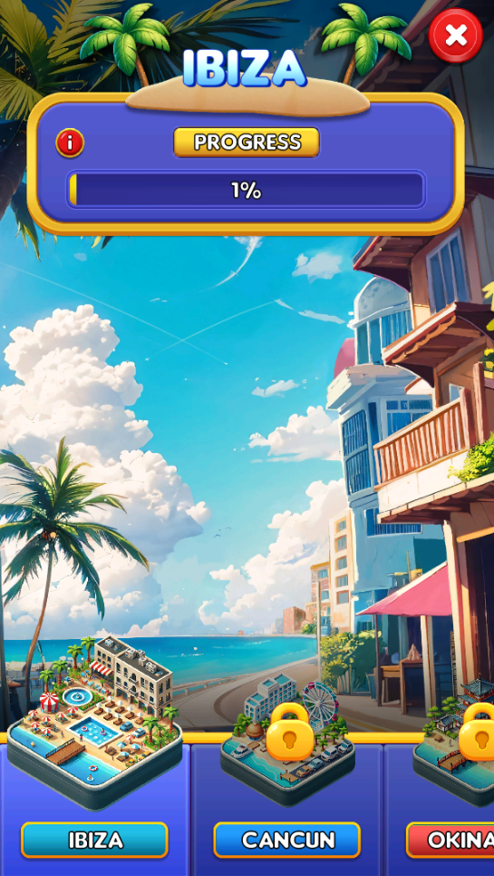
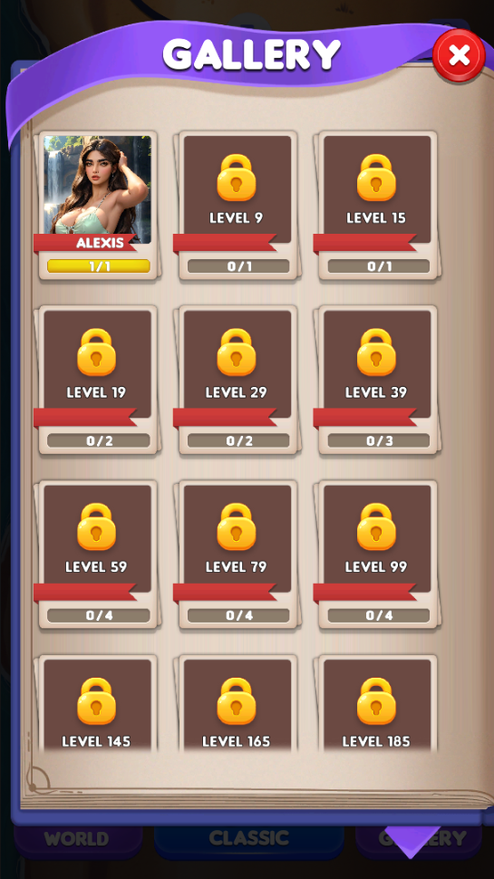

Love Blast: Block Puzzle
Overview: Implemented and expanded puzzle gameplay features for a released mobile title.
What I Built
- Implemented core Block Blast-style gameplay with figure spawn logic, VFX, combo systems, and polished game feel.
- Built a player retention system with continuous difficulty balancing and controlled figure drop behavior.
- Built chat UI with Telegram-like animations and notifications, and added an Instagram-like gallery with custom animations.
- Built REST API analytics integration and automated data pipeline streaming to BigQuery, generating retention/engagement reports and telemetry hooks that track player actions.
- Built a 400-level progression system and created a Google Sheets pipeline where designers fill level data that is automatically imported into the game, including CSV import tools for rapid balance iteration.
- Implemented a full tutorial system.
- Created custom Unity Editor tools for technical artists and level designers: level editor with visual validation, automated asset validators, and content pipeline automation.
Challenges
- The game went through several major redesign phases, and due to flexible architecture these changes were implemented quickly with minimal bugs.
Results & Impact
- Delivered a large content pipeline with 400 levels, 20 characters, and 7 hotels.
- Optimized resource management to reduce build size by 30% and improve startup speed by 20%.
- Improved UI responsiveness and overall game feel, resulting in a 23% increase in user engagement and session duration.
Tech Stack
Unity, C#, Git, Zenject, UniTask, DoTween, Firebase, BigQuery, Custom Editor, Xcode, Android Studio, Memory Management, REST API Integration, Addressables, AppLovin
Links
Google Play: Love Blast: Block Puzzle
Media





